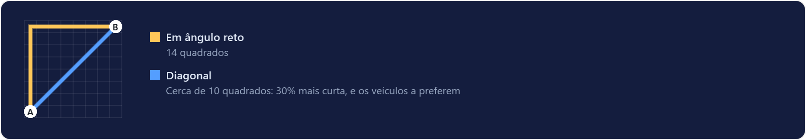

Estradas e trilhos
Arrastar linhas, encostas, cruzamentos e diagonais.
Arraste com Estrada (2) ou Trilhos (3) para construir. A nota ao lado do mouse mostra o preço, ou o motivo de não dar para construir.
- Os entroncamentos se formam onde as linhas se encontram.
- Os dois sobem uma encosta de frente, mas nunca a atravessam de lado. Aplaine antes o terreno irregular.
- Estrada e trilhos se cruzam numa passagem de nível se os dois forem retos e o terreno for plano.
- As cidades constroem suas próprias ruas. Seus ônibus e caminhões podem usá-las.
- Os trilhos são de quem os construiu: você não pode construir sobre os de um rival nem removê-los.
Diagonais
- Arraste a uns 45 graus para traçar uma diagonal.
- Uma diagonal é cerca de 30% mais curta do que contornar a esquina, e os veículos a preferem.
- Duas diagonais podem dividir um quadrado em terreno plano, então a linha dupla funciona.
- Sinais funcionam nas diagonais. Estações precisam ser retas.


Ligar dois lugares
- Escolha Ligar por estrada em Estradas ou Ligar por trilhos em Ferrovia e clique onde a linha começa. Aponte para onde ela deve ir: a melhor linha entre os dois aparece na hora, com diagonais e tudo, e o preço na nota ao lado do mouse.
- Clique para construí-la. Shift+clique, em vez disso, fixa a linha até aquele ponto e continua dali, para guiá-la em volta de uma cidade ou pelo terreno que você escolher. Esc ou um clique direito descartam o início.
- Comece ou termine na sua própria estrada, trilho ou estação e a nova linha se junta a ela. Ela nunca passa por cima dos trilhos de um rival.
- Onde o caminho passa sobre a água ou por um morro íngreme demais para subir, ela constrói uma ponte, no estilo mais barato que alcance, ou um túnel - a menos que um pequeno desvio custe menos. A nota os mostra com o preço. Pontas a mais de 160 quadrados uma da outra estão longe demais para uma só linha: adicione pontos de passagem.
- Um só Ctrl+Z desfaz a linha inteira.
A estrada custa $ 260 por quadrado e os trilhos $ 420. Todos os preços estão em Custos de construção.